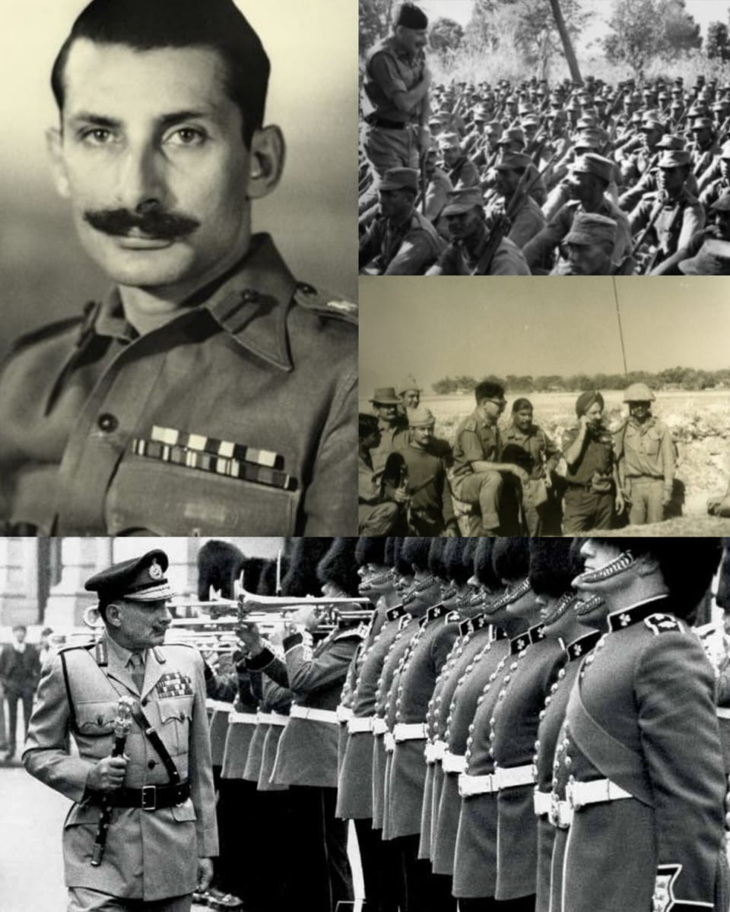
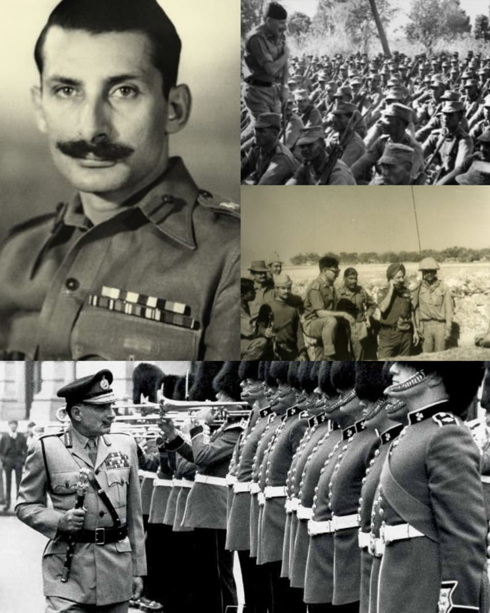

A Legendary Soldier
Field Marshal Sam Hormusji Framji Jamshedji Manekshaw, fondly known as Sam Bahadur, was one of the most respected and celebrated leaders in Indian military history. His life was a remarkable example of courage, discipline, and unwavering dedication the nation.
Architect of the 1971 Victory
Sam Manekshaw’s leadership during the 1971 Indo-Pak War remains a defining moment for India. His strategic brilliance and calm decision-making led to a decisive victory and the creation of Bangladesh. He firmly believed in preparation over haste and refused to send his soldiers into battle until they were fully ready, even under immense political pressure.
Leadership Built on Integrity
What set Sam Manekshaw apart was his honesty and moral courage. He never hesitated to speak the truth, regardless of rank or authority. His leadership was rooted in integrity, earning him immense respect from both political leaders and the armed forces.
A Leader Loved by His Soldiers
Sam Manekshaw shared a deep bond with his troops. He treated his soldiers with respect and care, always placing their safety and dignity above everything else. His sharp wit, warmth, and approachability made him not just a commander, but a trusted mentor.
A Lasting Legacy
Even after his service, Sam Manekshaw’s life continues to inspire generations. He taught the nation that true leadership means responsibility, courage, and compassion. His values remain relevant, reminding us that serving the nation is the highest form of honour.
Conclusion
Field Marshal Sam Manekshaw was more than a military leader—he was a symbol of strength, wisdom, and patriotism. His legacy as Sam Bahadur will forever live on in the history and heart of India.
 
